3am on the shortest night of the year, in drizzle. Amber walks home across town from a late shift at the care home, texting Ink, who is awake at home with his anxiety. The town watches her: a stranger's doorbell, the council's cameras, a fox. On the white suspension bridge over the river the call drops, the lamps fail, and a second shadow, carrying an umbrella, stretches up the bridge towards her.
Version 4, with your answers: midsummer, the real bridge restaged, his courage and a signal broken both ways, echoes only where they work, the cameras in monochrome, and the title, Sodium, for the song and the film.
Your answers are in, under Decided, in your words; what follows from them is folded into the plan: his lost message arriving after he does, the 03:07 false start on their doorbell, the liberties we take with the real place, listed and kept on purpose.
Her walk on Bedford's real streets, in order, with the story's clock: 02:58 at the care home's door to 03:46 at theirs.
A way of seeing per section (your structure), and the threads that run through them: the map, the town's cameras, two doorbells, the fox.
Every sung line given its form by what it means, and most short echoes dropped (your notes on comic_v1).
The real bridge: white lattice arches and no lamps on its deck, so the bridge scenes are restaged.
Proposals to judge: midsummer, so dawn at their door is true; their doorbell's 03:09, when he set out; the bridge's camera coming back.
The storya night carer's walk home, in four movements
Amber cares for people for a living. Tonight her shift ends late and she walks home across town, 3.7 km in the drizzle, and she'll care for someone there too: Ink, awake, anxious. She types to him, deletes, types again. Everything is sodium amber and ink black, the way a British street looks under the old lamps, and the town watches her: a stranger's doorbell, the council's cameras, a fox under a parked car.
She remembers the last time they walked together, and the memory is the only colour in the night, seen in a puddle. On the High Street she calls him. The ward she left flashes past in cold green in a lit window: a crowded room, and she was alone in it. Her reflection keeps step in the dark shop windows. Each true thing they say lights a paving slab under her feet.
She reaches the river. Her map shows his dot at home and hers on the Embankment, the battery at 9%. The lamps along the river fail one by one; the signal goes. She stops at the top of the white suspension bridge, in the dark. Then a second shadow stretches up the bridge from the far end's lamp, carrying an umbrella. A woman alone at 3am: we don't know who it is. His laugh comes from the dark, not from her phone.
It's Ink, under a black umbrella. The man who struggles to leave the house walked out into the rain to meet her halfway: he read her message at 03:06, stopped on the doorstep at 03:07, went at 03:09. He texted her on the way and the signal lost it, as it lost everything tonight, both ways. The camera that lost the bridge finds two people on it; his message arrives after he does; and their own doorbell, when they get home, holds the courage it took. They walk home in step while the shortest night ends, and the film closes on their doorstep at sunrise.
The song reads as a long-distance love song. The film turns it into one walk across one town, and puts its surprise in the bridge: the voice she's afraid of losing isn't on the phone any more, it's on the bridge with her. And the light and the shadow are the duo's own name: Amber, and Ink.
The walkBedford's real streets, unnamed in the film; 2.4 km alone, then home together
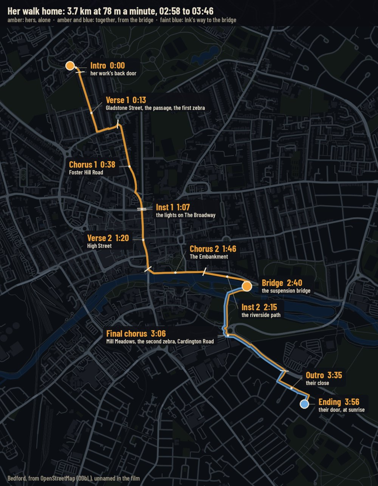
The story's clock
02:58
Intro
She leaves work
02:59
Intro
A stranger's doorbell: Motion at Front Door
03:05
Verse 1
Her message, in the passage: delivered, not read
03:06
unseen
Ink reads it, and starts getting ready
03:06
Verse 1
The first zebra
03:07
Chorus 1
CAM 03 finds her (the reel's clock)
03:07
unseen
Ink on his doorstep, umbrella furled; he stops
03:09
unseen
Ink goes, under the umbrella
03:10
unseen
Ink: '🌧 😩'. Not delivered: the signal is broken both ways tonight
03:12
Chorus 1
She sees it, late: Read 03:06
03:14
Instrumental 1
The lights on The Broadway
03:15
Verse 2
She calls him; he answers, walking
03:20
Chorus 2
The Embankment; the battery at 9%
03:29
Bridge
The top of the bridge: they meet
03:31
Final Chorus
His 03:10 message arrives
03:35
Final Chorus
The Rope Walk zebra, together
03:46
Outro
Home: their doorbell sees two
04:47
Ending
Sunrise; the streetlights click off
At 78 m a minute from 02:58. The clocks on screen (the cameras, her phone, the doorbells) all read this one; the film itself compresses 48 minutes into four.
Along the way
0.00 km
02:58
Her work: the care home's back door Turner Way; the street; the home is ours, not one of the real ones
0.10 km
02:59
Someone's doorbell Gladstone Street; ours
0.50 km
03:04
The passage: THE IN-BETWEEN a footpath to Roff Avenue; the footpath is real; its sign is ours
0.59 km
03:05
The first zebra Roff Avenue; real
0.67 km
03:06
Cameras, a chemist, a bus shelter Foster Hill Road; the road; what's in it is ours
1.28 km
03:14
The lights The Broadway; real (traffic signals and a crossing)
1.29 km
03:14
Closed shops, a café, the ward's window High Street; the street; the shops are ours
1.69 km
03:19
The river, benches, plane trees The Embankment; real
2.08 km
03:24
The riverside path along the Great Ouse; real
2.44 km
03:29
The suspension bridge: where they meet 1888, white lattice arches; real
2.58 km
03:31
The Royal Engineers Bridge: off the island Mill Meadows; real
2.87 km
03:34
The second zebra Rope Walk; real
3.34 km
03:40
A bus stop Cardington Road; real
3.73 km
03:45
Home: their first door their close; the pin sits on the road; the house is drawn from imagination
The whole songsections to scale; numbered dots are the frames below; the strip is the colour script
How far apart they feel: high is alone, low is togethercolour script: hover a strip for its colours
Section by sectionwhere she is, how it's seen, every frame and every line
Frames are labelled by where they come from: a Codex sketch (drift and all), code over a sketch (a mock of what the film will do), or a still from a session 3 reel (the real thing, as tested).
0:00 to 0:13 · keys and synth pad, vocal chops, no drums
Intro
From above, then a stranger's camera
The care home's back door, Turner Way · 02:58 to 02:59
A black page; the keypad beeps on the vocal chops; the back door opens and a long rectangle of cold white light falls across wet tarmac, where the title is painted in road-marking letters: SODIUM. Her shoes step out into amber, and the light shuts off behind her. Then, two doors down the first terrace, someone's doorbell camera wakes and sees her pass. Our first look at her is a stranger's.
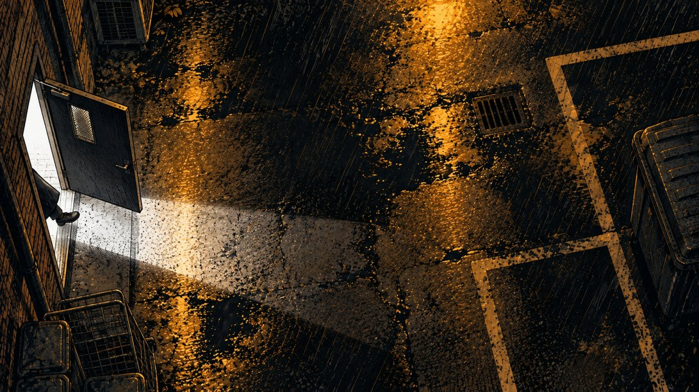
10:00Sketch
Black page. A keypad beeps (the vocal chops), a fire door opens and a long rectangle of cold fluorescent light falls across wet tarmac. Seen from directly above: her work shoes and the hem of her coat step out of the light into the amber of the first streetlight. The care home's light shuts off behind her.
The care home's door from above: cold white inside, amber outside, the two colours meeting at the door
Not at any real care home: Turner Way's end of the route, unnamed
The title, SODIUM, and AMBER & INK painted on the yard's tarmac as road markings
Colour: ink + amber, one cold white rectangle
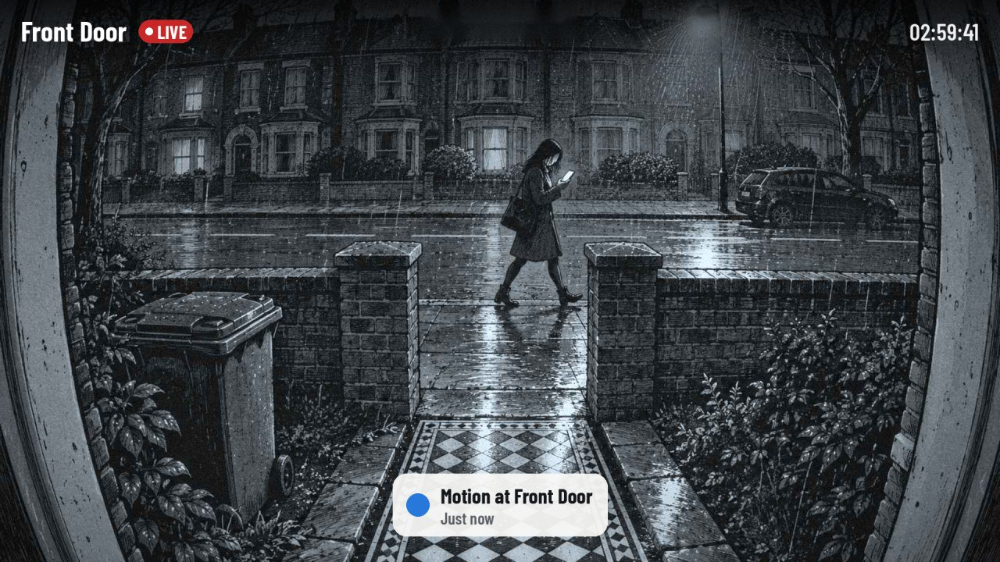
20:07Code over a sketch
Someone's doorbell camera, two doors down the first terrace, wakes as she passes: a fisheye in night vision, a figure we don't know yet, 'Motion at Front Door · 02:59'. The film's first view of her is a stranger's camera.
Who's watching, opened: the cold open is a camera, and its owner is asleep
The doorbell's own interface, lettered by us: Front Door, Live, the clock, the motion banner
Paid off in the outro, by their own doorbell
Colour: night-vision grey, a cold white motion banner
Known drift: bare winter trees and ankle boots (midsummer, and flat work shoes, if you agree)
No lyrics: the picture and the music.
0:13 to 0:38 · her voice over keys alone; drums enter at bar 17 (25.9 s)
Verse 1
Her eyes
Gladstone Street, the passage, Roff Avenue's zebra · 02:59 to 03:06
The long terrace, the shadow clock under every lamp, a memory in a puddle. The route really does leave by a footpath between garden walls, so the in-between gets its street sign. The drums come in on her phone: a message, one grey tick. At the first zebra she waits for nothing and reaches out beside her.
30:13Sketch
We used to walk in step at night
Your shot. Straight down on a lone figure walking a long pavement past a row of streetlights, head bowed to the glow of her phone. As she passes under each lamp her shadow swings: long behind her, short underfoot, long ahead. Between two lamps she has two shadows at once, one from each light, as if someone walked beside her.
Caption: 'We used to walk in step at night' (your note: a simple opening caption)
The shadow clock: her shadow behind her, under her, ahead of her at each lamp; from every lamp in view (a lamp behind her throws one ahead)
Gladstone Street: a long terrace, cars along one side, bins out
Colour: ink + amber
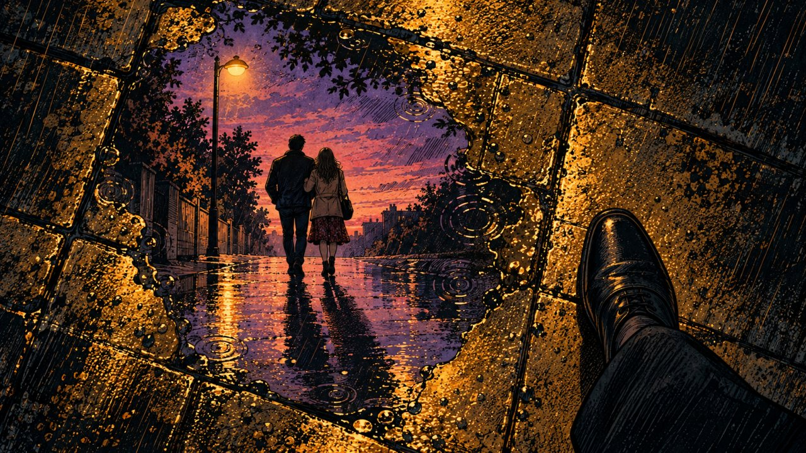
40:17Sketch
Two shadows underneath one light
She steps round a puddle. In its reflection, a shaped panel: the last time they walked together. Two figures arm in arm under one streetlight, two shadows side by side, on a summer evening in colour. Her footstep breaks the surface and the memory ripples away.
The memory in colour in a puddle-shaped panel; the line on the water, rippling
Two shadows underneath one light: shown here as a memory, and not again until the bridge
Known drift: a man's brogue at the puddle's edge (hers are flat black work shoes)
Colour: ink + amber; the memory in full dusk colour
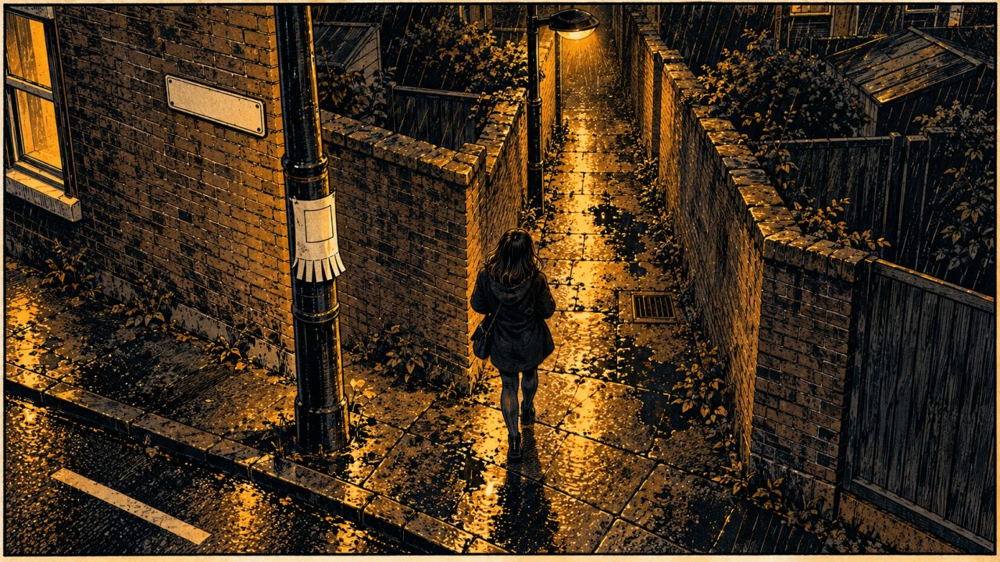
50:20Sketch
But somewhere in the in-between / We lost the sense of what we mean
The real route leaves Gladstone Street by a footpath between garden walls. On the corner house, a street sign: THE IN-BETWEEN. Taped to the lamp post at its mouth, a lost-pet poster: LOST, and in the space for the description, 'the sense of what we mean', with its fringe of tear-off tabs.
Lyrics as street names, once: the street sign in the black-on-white British style
A real object for a real word: the LOST poster (designed as one, cause 2)
The passage is real (OpenStreetMap: a footway from Gladstone Street to Roff Avenue); its sign is ours
Colour: ink + amber
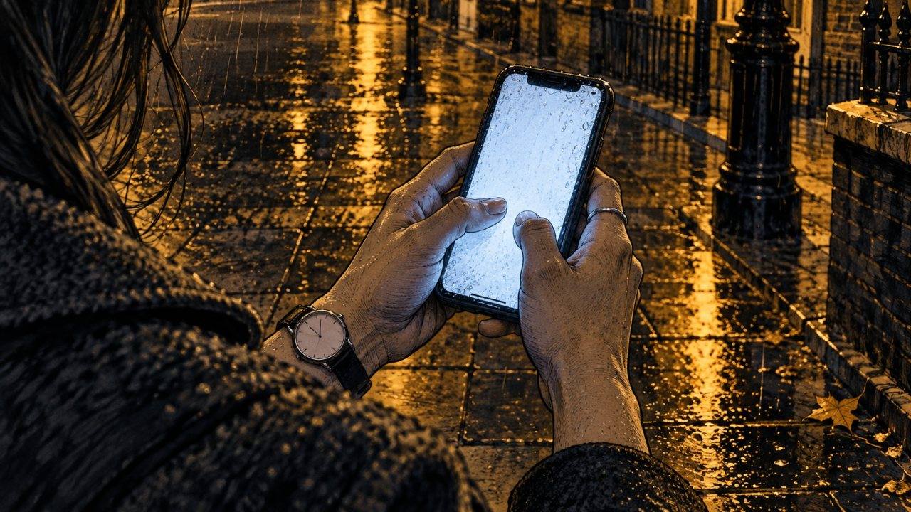
60:26Sketch
Now every message feels half-sent
Over her shoulder, down onto the phone in her hands, as the drums come in. A real messaging screen, lettered by us: her message to Ink, 'Now every message feels half-sent', sent at 03:05 with one grey tick; then 'Like letters written in regret' typed in the box and deleted letter by letter, never sent. A swipe to her map for a glimpse: Home 2.3 mi, 48 min; Ink's blue dot at home.
The phone as its object (cause 2): bubbles, the time, the typing dots on the hi-hats, ticks
The map's first glimpse (your budget: a glimpse in verse 1)
Known drift: a watch and a thin ring on her right hand (she wears neither)
Colour: ink + amber, cold blue screen
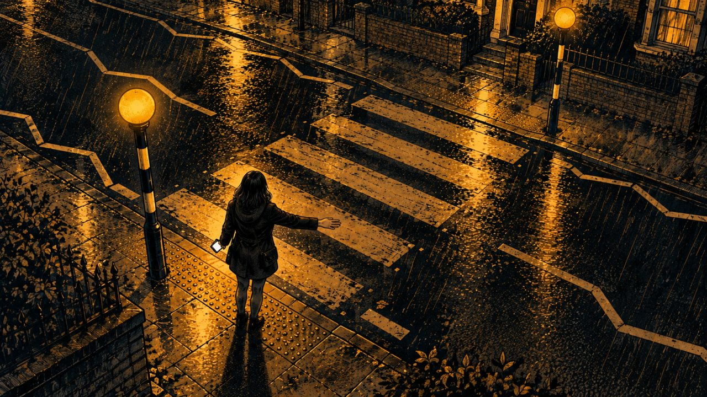
70:32Sketch
I reach across this empty space / And wonder, can we find our place?
The zebra crossing on Roff Avenue, the real one on her route. She waits at the kerb though nothing is coming, the beacons blinking, and reaches out beside her where he would walk: her right hand held out open, palm down, its thumb forward. 'And wonder,' in a box at the top; 'can we find our place?' her thought (your note).
Redrawn for your notes: the hand the right way round; the zebra laid out as a real one (stripes along the road, tactile paving at the dropped kerb, a beacon at each end)
The shadow's hand reaches further than hers
Crossed alone here; crossed together, at the other zebra, in the final chorus
Colour: ink + amber, the beacons
Patched twice: palm-up came back with its thumb forward again (your note's howler), so palm down, where thumb-forward is right
Every line
0:13We used to walk in step at nightCaption box The opening caption, over the walk (your note on comic_v1)
0:16Two shadows underneath one lightWords in the world On the water of the puddle memory, rippling with it
0:19But somewhere in the in-betweenWords in the world The street sign at the passage's mouth: THE IN-BETWEEN. Lyrics as a street name, once
0:23We lost the sense of what we meanWords in the world A LOST poster on the lamp post: LOST, then 'the sense of what we mean' where the description goes, 'we' added in marker
0:26Now every message feels half-sentHer phone Her message to Ink, sent 03:05: one grey tick, delivered, not read
0:29Like letters written in regretHer phone Typed in the box and deleted letter by letter, never sent. Then a glimpse of her map: Home 2.3 mi, Ink at home
0:31I reach across this empty spaceCaption box At the zebra's kerb, her right hand held out into the empty space beside her
0:35And wonder, can we find our place?Thought balloon 'And wonder,' in a box at the top; 'can we find our place?' her thought balloon (your note)
0:38 to 1:07 · stop-start drums under the hook; strings rise in the second half
Chorus 1
The city's eyes
Foster Hill Road to the lights on The Broadway · 03:06 to 03:14
The town's cameras pick her up: CAM 03 zooming on the bar, the monitor wall with the echo on its labels, the bridge's camera lost on a downbeat. One panel from her eyes: a chemist's green cross. Between the lines, the first low shot: a fox under a parked car watches her shoes. She crosses at the lights over the road's sealed cracks, and her phone says Read 03:06.
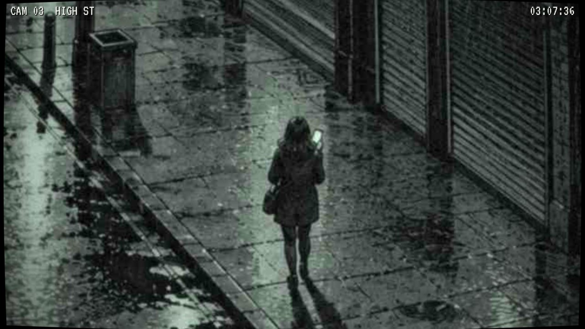
80:39From a session 3 reel
We'll build a bridge between our hearts
CAM 03 finds her on Foster Hill Road, zooming in on each bar (from the session 3 reel). The line appears on the road ahead of her a word at a time, as road paint, and the camera sees it.
The city's eyes: monochrome, the recorder's few frames a second, the clock 03:07
Road paint seen through the camera: the street writing back, but watched
Colour: CCTV grey-green
From the session 3 reel; its label still says HIGH ST
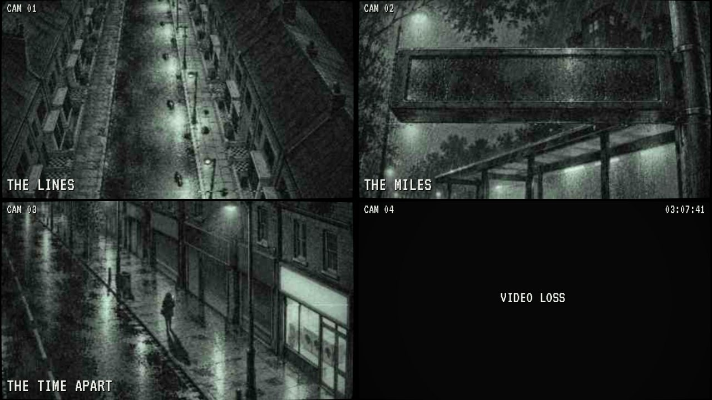
90:43From a session 3 reel
(The lines, the miles, the time apart)
The monitor wall, its labels lettered with the echo as she sings it (you liked this). CAM 04 BRIDGE is lost on the downbeat: VIDEO LOSS.
The echo as camera labels
VIDEO LOSS on the bridge's camera: set up here, paid off in the final chorus
Colour: CCTV grey-green
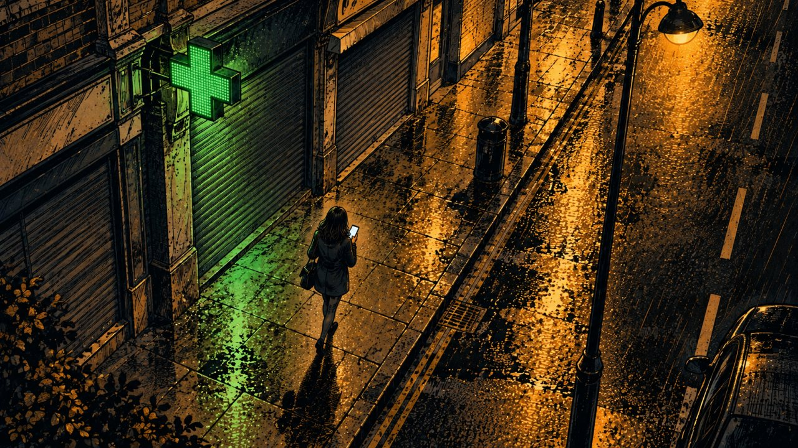
100:46Sketch
With every word that heals a scar
Back to her eyes for one panel: a chemist's green cross above the shuttered shops, the one green light in the street, scrolling the line in its LED dots. Words that heal, on the sign for healing.
Green means care in this film (her work): the cross is the street's own version of it
A new scene for this line (your note: the road wasn't its place)
Colour: ink + amber, one green cross
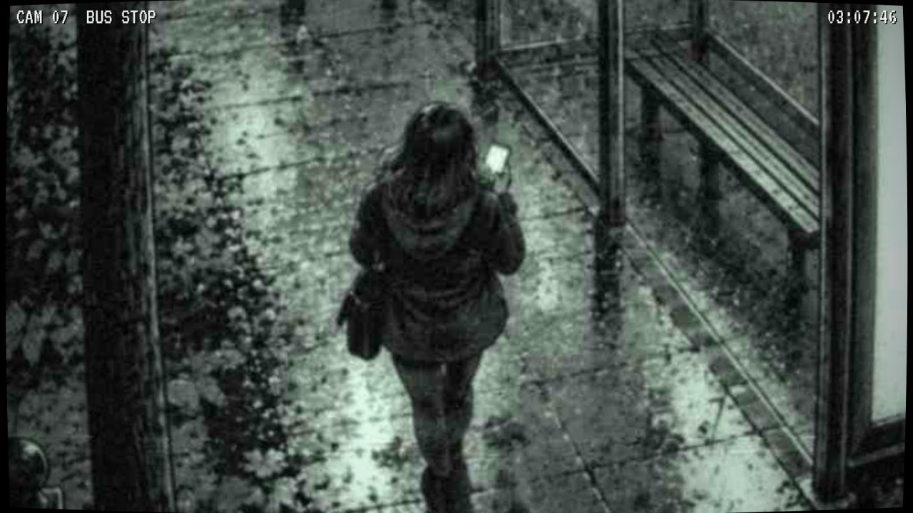
110:50From a session 3 reel
We're closer now than we ever are (closer)
The bus stop. Its advert is a phone network's poster with the line as its headline (an invented network); CAM 07 zooms in on '(closer)' (you liked the zoom). The ad promises closeness; the network loses her on the bridge.
The advert designed as an advert (cause 2): headline, strapline, a graphic, no real brand
Then the departure board in amber LED: NO MORE BUSES TONIGHT · FIRST BUS 05:42, and the echo scrolling (0:55): why she walks
Colour: CCTV grey-green
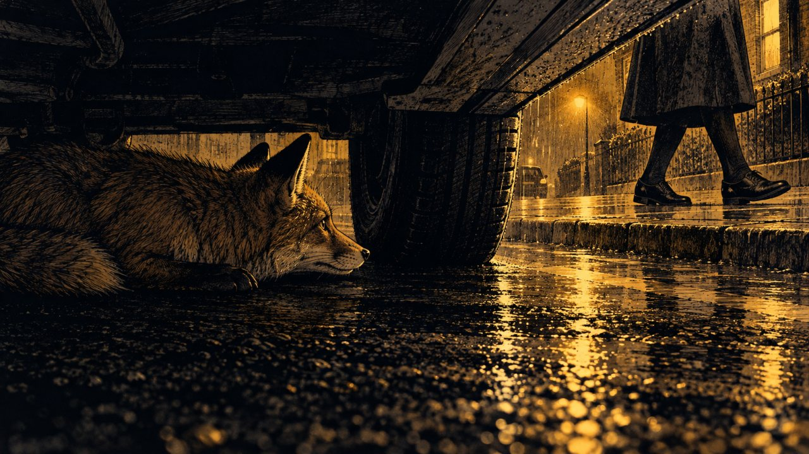
120:52Sketch
Between the lines, the first low shot: under a parked car, a fox lies flat on the wet tarmac and watches her shoes go by. The one other thing awake.
The fox's eye level is our low, wet shot (your note: 'Very low shots on a wet street are usually quite effective'); the car's tyre and the fox give parallax its foreground
The fox comes back twice: crossing at the lights, and watching the two of them go
Colour: ink + amber
Known drift: her shoes came out as men's lace-ups
Every line
0:39We'll build a bridge between our hearts (our hearts)Camera labels Road paint appearing a word at a time on the road ahead, seen by CAM 03 as it zooms in on the bar. '(our hearts)' dropped
0:43(The lines, the miles, the time apart)Camera labels The monitor wall's labels (built; you liked them). CAM 04 BRIDGE is lost on the downbeat: VIDEO LOSS
0:45With every word that heals a scar (a scar)Words in the world A chemist's green cross scrolling it in LED dots: words that heal, on the sign for healing. '(a scar)' dropped
0:49We’re closer now than we ever are (closer)Words in the world The bus shelter's advert: a phone network's poster (an invented one) with the line as its headline. '(closer)' is CAM 07 zooming in (liked)
0:55(The lines, the miles, the time apart)Words in the world The stop's departure board in amber LED: NO MORE BUSES TONIGHT · FIRST BUS 05:42, then the echo. Why she walks
0:58Crossing over where the fractures are (they are)Words in the world Laid in the road's tar-sealed cracks as she crosses at the lights, seen from CAM 05 above. '(they are)' dropped
1:03(that little light that says we’re not that far)Thought balloon Her thought balloon (your note), as she looks down at her phone: under her message, Read 03:06, arriving six minutes late. The signal comes and goes tonight
1:07 to 1:20 · the first full two-step groove
Instrumental 1
Observations of 3am
The junction on The Broadway · 03:14 to 03:14
The first full groove, and the first time the film dances: the lights change for nobody, the green man beeps on the hi-hats, and the fox trots across on the green, the only one obeying. A night bus, NOT IN SERVICE, lit and empty, slides through, and its windows are the wipe into the High Street.
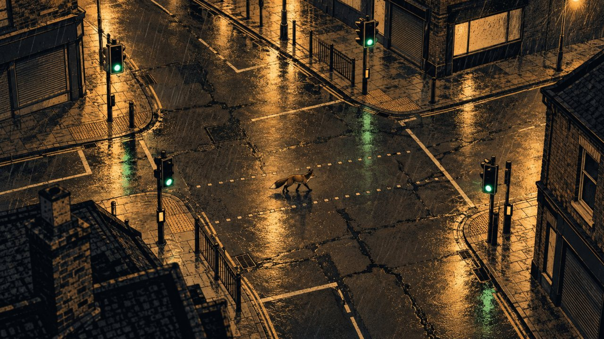
131:10Sketch
(the first full groove)
The Broadway's junction from CAM 05, high on its pole. In chorus 1 she crossed here ('Crossing over where the fractures are', the words laid in the road's tar-sealed cracks). Now the lights change for nobody, the green man beeps on the hi-hats, and the fox trots across on the green, the only one obeying. A night bus, NOT IN SERVICE, lit and empty, slides through: its windows are the wipe into the High Street.
Observations of 3am: lights for nobody, the beeping, the empty bus
The first time the film dances: lights and beeps on the groove, panels stuttering
The night bus's lit windows sliding past as a strip of panels
Colour: ink + amber, the lights' colours on the beat
No lyrics: the picture and the music.
1:20 to 1:46 · drums and bass only, keys and synth out (82-92 s)
Verse 2
Glass and reflections
The High Street's closed shops · 03:14 to 03:19
She calls him. We watch from inside a closed café, through rain on the glass. The ward she left flashes past in green in a lit upstairs window. Her reflection walks beside her in a dark shop window; a convex mirror on its post bends her small. Each true thing they say lights a paving slab under her feet.
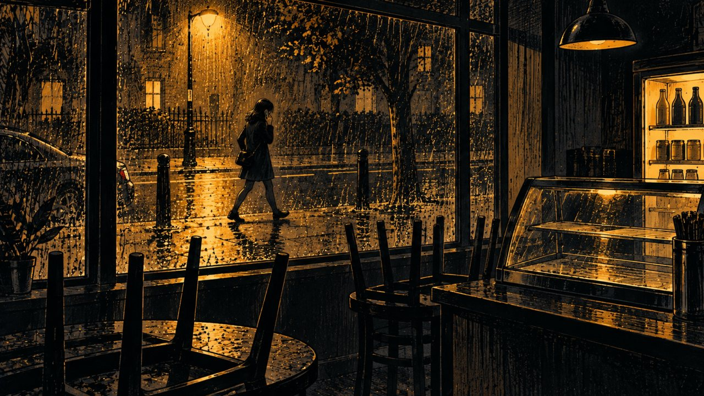
141:21Sketch
The distance hums inside the phone
Your idea: from inside a closed café on the High Street, looking out. Chairs upturned on the tables, the drinks fridge humming, rain on the glass; outside, small under the lamp, she has called him.
Reflections and glass are verse 2's way of seeing
The dark interior is the foreground parallax needs
The call's screen when she lifts the phone: 'Ink', the timer from 00:01
Colour: ink + amber
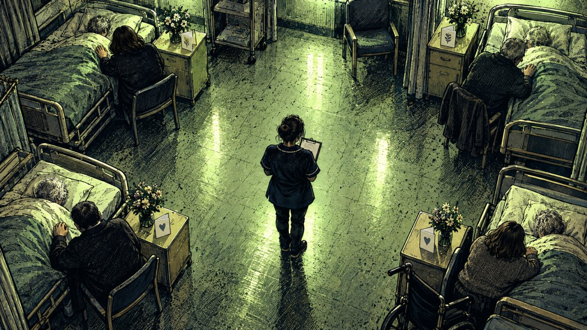
151:24Sketch
A crowded room, I feel alone
A flash back into her late shift, in a different colour: the ward of the care home, cold green-white. Hospital beds, each with its visitors: families on chairs pulled close, flowers, cards, a hand held. Amber in her tunic among them, needed by everyone and with no one. The panel is small and tilted inside the dark, like a lit window in a building she's walking past.
The ward in cold green: her work, and its colour
'A crowded room,' as a caption; 'I feel alone' her thought, small, beside the tiny figure of her
Framed as a lit upstairs window over the High Street's shops
Colour: fluorescent green-white
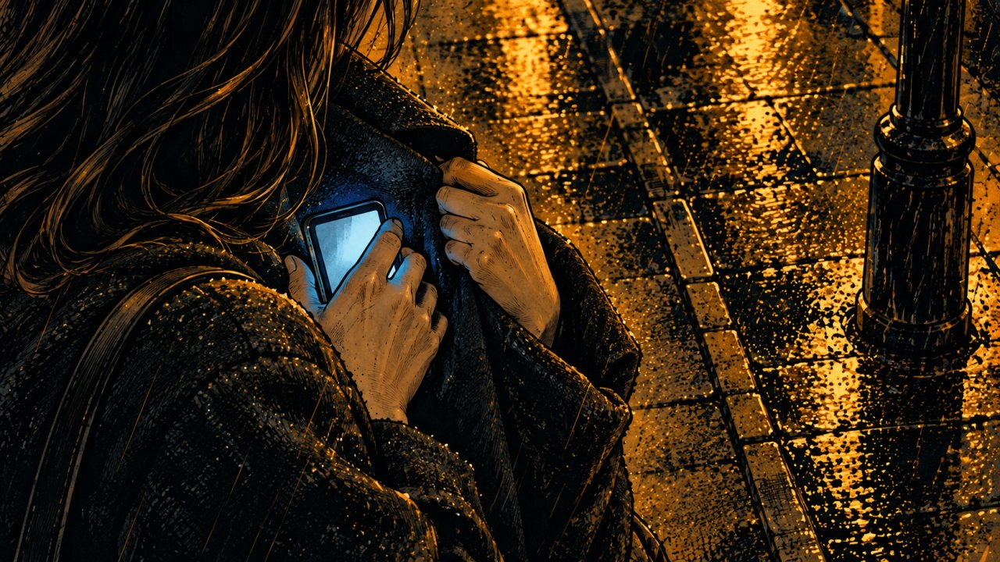
161:27Sketch
Your echo held against my chest
On the call now. She holds the phone flat against her chest to hear him breathe, her other hand at her collar. The phone's blue light shows through her fingers. His breathing is drawn as rings, slow, then faster.
Caption: 'Your echo held against my chest'
His breath as rings of blue light from the phone, in time with the bass
Your note on comic_v1: no tiny whispers for echoes
Colour: ink + amber, blue through her fingers
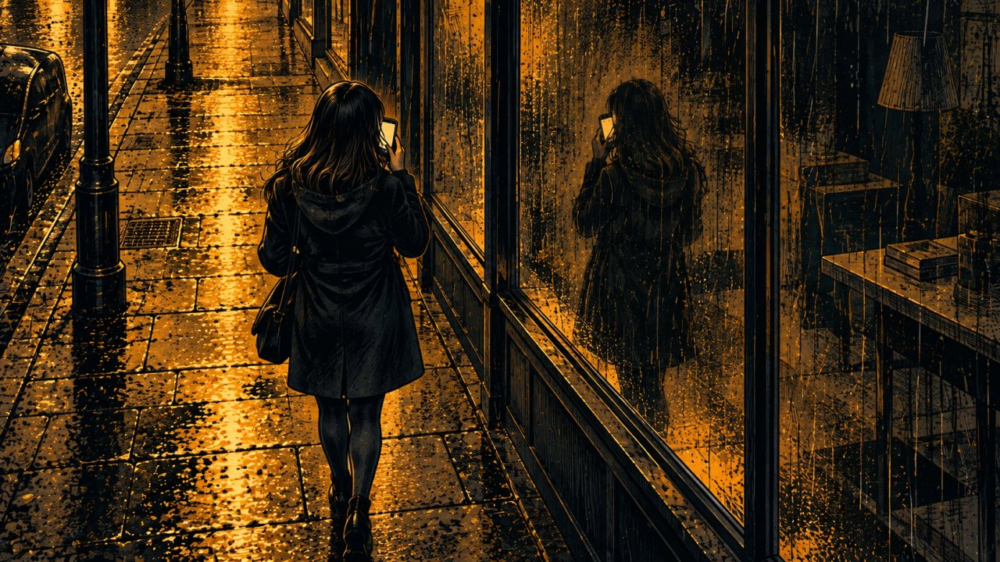
171:30Sketch
A ghost of all we never said
A long dark shop window, and her reflection in it walking beside her, pale, keeping step: a second figure who is only her. The line lettered faintly on the glass, over the reflection.
She's backing herself (your words): the reflection is her echo, made visible
Then the convex mirror on its post at a yard's exit (1:34, 'I'm reaching out, my voice unsure'), as you asked: in the scene, on its post
Colour: ink + amber
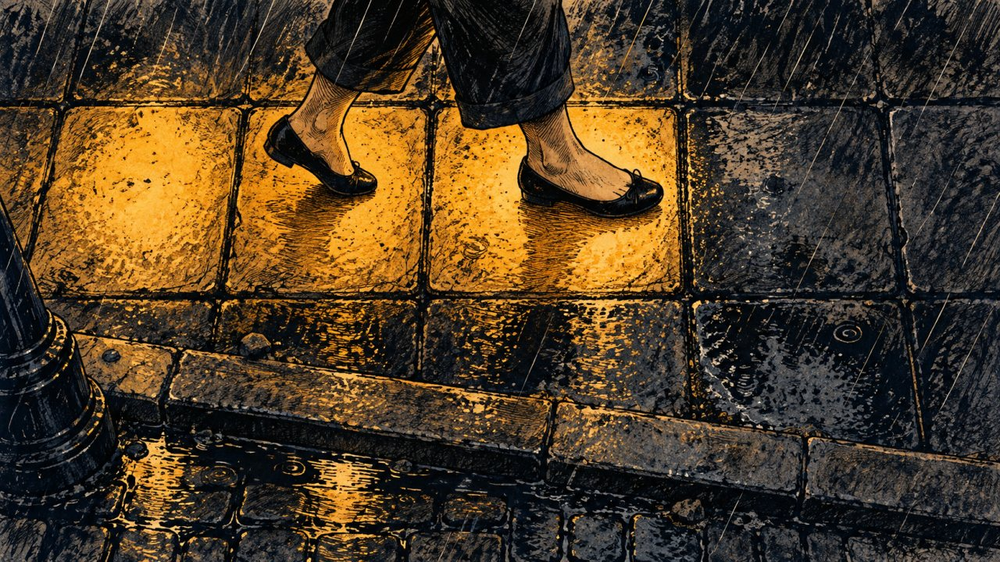
181:40Sketch
Each fragile truth we choose to speak / Lays down a stone beneath our feet
Straight down on her feet and the paving slabs ahead. Each word she says lights a slab as she steps on it, the word carved into the stone: the conversation becomes the path. (The word-stones from the first test, grounded.)
Word-stones: each word lights the slab she treads on, carved and glowing; the High Street's paving
'You answer soft,' small, in his blue, near the phone (1:37); 'I ask for more' hers
The stones come back on the bridge's deck: 'Word by word, we cross the night'
Colour: ink + amber, the slabs glowing
Every line
1:20The distance hums inside the phoneCaption box From inside a closed café, looking out; she has called him (the call's screen: Ink, 00:01)
1:23A crowded room, I feel aloneThought balloon The ward in green, framed as a lit upstairs window: 'A crowded room,' a caption; 'I feel alone' her thought, small, by the tiny figure of her
1:27Your echo held against my chestCaption box The phone held to her chest; his breath in rings of blue light
1:29A ghost of all we never saidWords in the world Lettered faintly on the dark glass, over her reflection walking beside her
1:33I’m reaching out, my voice unsureCaption box In the convex mirror on its post at a yard's exit (your note: in the scene, on its post)
1:36You answer soft, I ask for moreCaption box 'You answer soft,' small and in his blue, by the phone; 'I ask for more' in her caption
1:39Each fragile truth we choose to speakWord-stones Word-stones: each word lights the slab she treads on, carved into it
1:43Lays down a stone beneath our feetWord-stones ...and the path behind her stays lit
1:46 to 2:15 · full
Chorus 2
The miles: her map
The Embankment · 03:19 to 03:24
The river appears. Half the chorus is her map, between drawn panels of the Embankment: both dots and the river between them, the footbridge ringed on 'bridge', the echo relabelling the walking card, the camera gliding onto the bridge. Battery 9%, one bar.
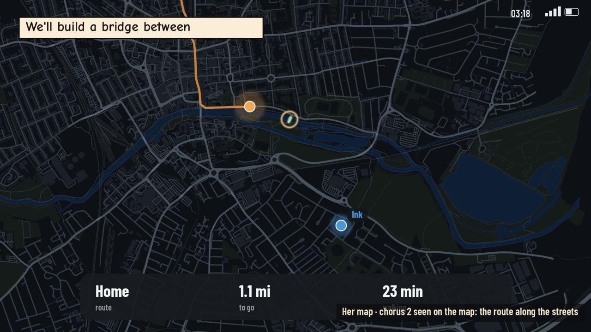
191:47From a session 3 reel
We'll build a bridge between our hearts (our hearts)
The miles: her map, half the chorus, between drawn panels of the Embankment (the session 3 reel). Both dots and the river between them; the footbridge ringed on 'bridge'; the dots pulse together on '(our hearts)'. Battery 9%, one bar.
The echo relabels the walking card (you: 'good touch ... Nice foreshadowing of the bridge')
The route draws itself home on '(The lines'; closer on '(closer)'; the camera on the bridge for 'Crossing over'
Colour: the map's night mode
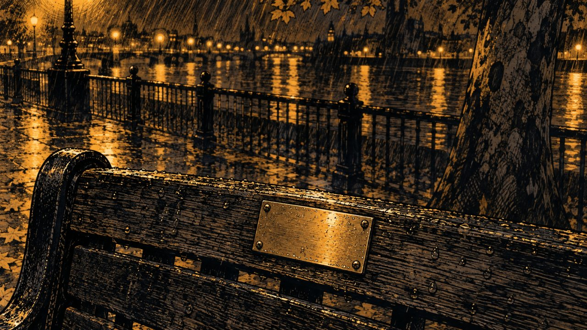
201:53Sketch
With every word that heals a scar
A drawn panel between the map's: a memorial bench on the Embankment, its small brass plaque engraved with the line, the way benches by a river carry words for someone.
The same line, a new object each chorus: a chemist's cross, a bench's plaque, then her hand in his
Drawn panels: the Embankment's plane trees, its lamps, the river's black
Colour: ink + amber
Known drift: autumn leaves on the ground (none at midsummer)
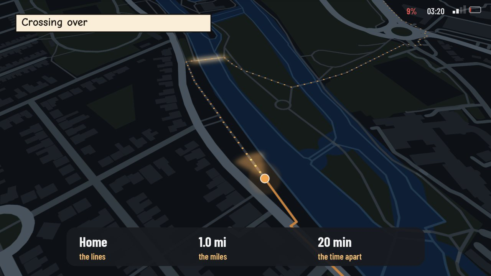
212:06From a session 3 reel
Crossing over where the fractures are
The map's camera on the footbridge, ahead of her (the reel; you: 'Camera work looks effective'). '(that little light that says we're not that far)' is her dot, lettered in the card.
Low battery and signal for drama (your note): 9%, red, one bar
Colour: the map's night mode
Every line
1:46We'll build a bridge between our hearts (our hearts)Her map Both dots and the river between; the footbridge ringed on 'bridge'; the dots pulse together on '(our hearts)'
1:51(The lines, the miles, the time apart)Her map The walking card relabelled (you: 'good touch ... Nice foreshadowing of the bridge')
1:53With every word that heals a scar (a scar)Words in the world A drawn panel: a memorial bench on the Embankment, the line on its brass plaque. '(a scar)' dropped
1:56We’re closer now than we ever are (closer)Her map Down to her dot, closer on '(closer)'
2:02(The lines, the miles, the time apart)Her map The route draws itself home
2:05Crossing over where the fractures are (they are)Her map The map's camera on the footbridge ahead (you: 'Camera work looks effective'). '(they are)' dropped
2:11(that little light that says we’re not that far)Her map Her dot, 'that little light', lettered in the card; the battery red
2:15 to 2:40 · full groove, then the breakdown: drums out 150-154 s, a string swell to 157 s
Instrumental 2
Depth: the river
The riverside path to the bridge · 03:24 to 03:28
The groove: parallax inside held drawings, a low shot on the wet path, the dolly zoom on the white arch ahead. At the breakdown the Embankment's lamps fail one by one ahead of her, sodium going pink, then dark. On the string swell the bridge rises out of the dark, white.
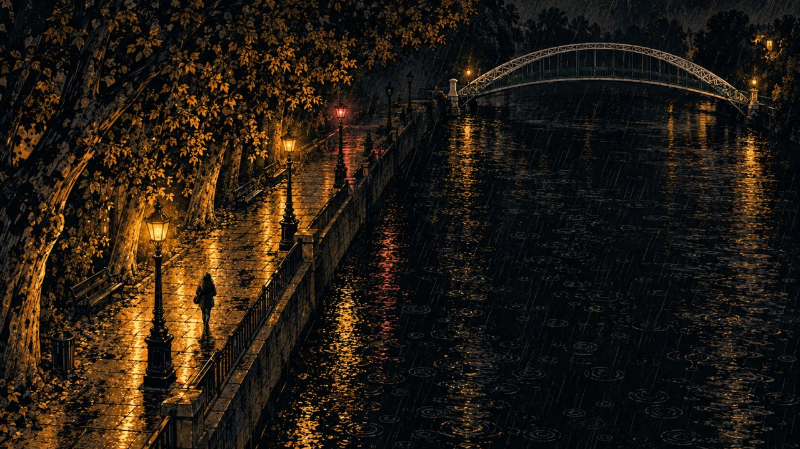
222:30Sketch
(the groove, then the breakdown at 2:30)
The riverside path under the plane trees. The groove: parallax inside held drawings, a low shot on the wet path, the dolly zoom. At the breakdown the Embankment's lamps fail one by one ahead of her, sodium going pink, then dark; on the string swell the real bridge rises out of the dark, white.
The real bridge has no lamps on its deck: the lamps that fail are the Embankment's
Each lamp lifted off the drawing and lit by us, so it can fail (the fix from session 3)
The dolly zoom on the white arch: she holds her size, the bridge recedes
Colour: ink + amber, going dark
No lyrics: the picture and the music.
2:40 to 3:06 · groove back, the heaviest bass so far
Bridge
The cameras lose her; the second shadow
The top of the suspension bridge · 03:28 to 03:29
No connection. She stops at the top of the arch in the dark. From the far end's lamp a second shadow stretches up the deck, carrying an umbrella. His laugh cuts the static, from the dark, not the phone. Ink steps into the light. The map: Ink · 6 m. The lamps restrike, pink warming to amber: two shadows underneath one light.
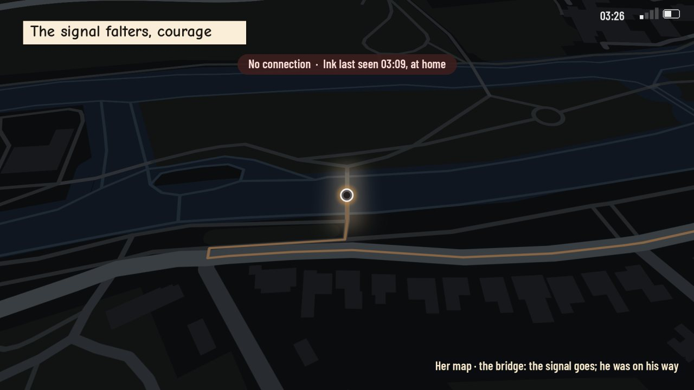
232:41From a session 3 reel
The signal falters, courage too
Her phone: the bars go, the call's timer freezes, the map greys. 'No connection · Ink last seen 03:09, at home' (the reel). 'The signal falters,' on the phone; 'courage too' her caption.
Your budget: 'No connection' as the signal falters
The signal is broken both ways tonight: his dot stuck at 03:09 when he left, and his message from 03:10 is stuck too (it arrives in the final chorus)
Colour: the map, greying
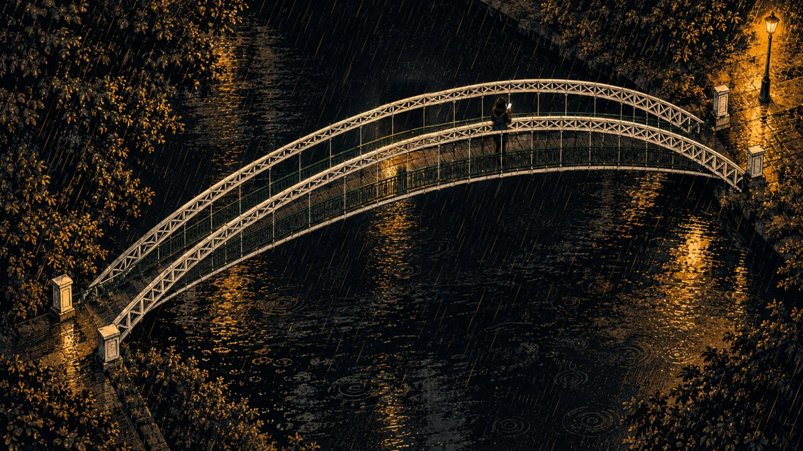
242:44Sketch
A pause, I'm scared of losing you
The real bridge: two white lattice arches over the black river. She stops at the top of its arched deck, in the middle of the span, in the dark: the bank's lamps have failed and only her phone lights her. 'A pause,' a caption; 'I'm scared of losing you' her thought. One lamp still burns at the far end.
Meeting halfway is the top of the arch: the highest point, the middle of the river
No shadow at all: there's no light on her
The bridge is 1.8 m wide: room for two side by side, under one umbrella
Colour: ink, the white arch, one far lamp
Patched: Codex stood her two-fifths of the way across; moved to the top of the arch
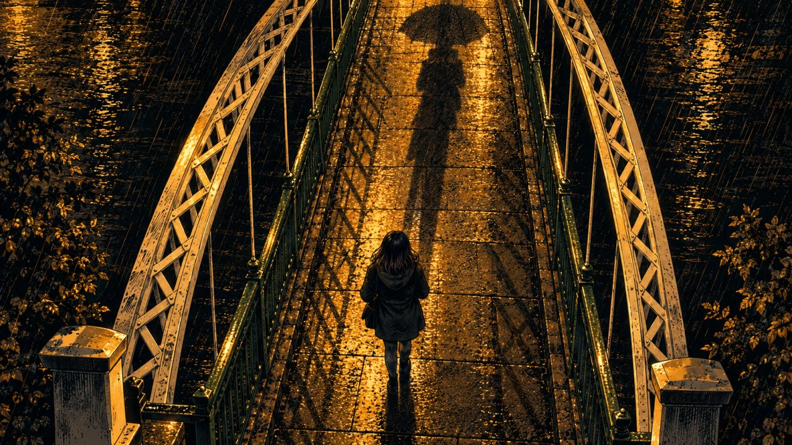
252:47Sketch
But then your laughter cuts the noise / And suddenly I hear your voice
The turn. From the far end's lamp, up the deck towards her feet, a second long shadow stretches: a person carrying an open umbrella, still out of sight. A woman alone on a bridge at 3am: we don't know who it is. His laugh cuts the phone's static, from the dark, not the phone.
The umbrella in the shadow (your note: it explains why she doesn't know him sooner)
The lattice arches' criss-cross shadows on the deck
Then the lamps restrike, pink warming to amber, the way sodium lamps really come back
Colour: ink + amber
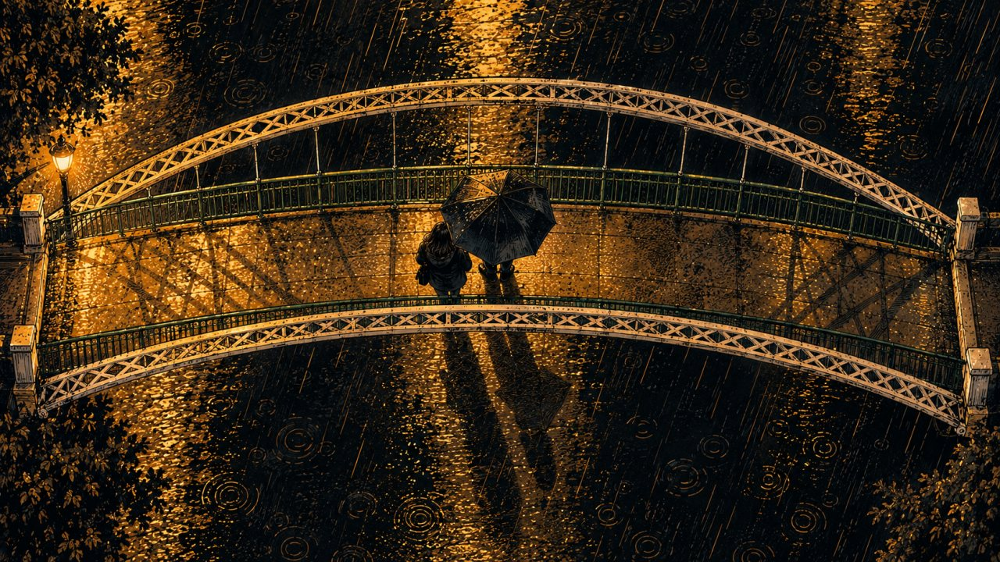
262:54Sketch
You say, “I'm here, I always was”
Ink steps into the light under a black umbrella: from above, the umbrella is all we see, and his shoes. 'I'm here, I always was' in his own hand, blue biro, held still in the middle of the page: the only time his writing is in the film. Two shadows underneath one light, as in her memory.
Then the map, just after: 'Ink · 6 m' on 'We name the distance' (your budget)
'Word by word, we cross the night': the word-stones light the deck between them
'To find each other in that light': the lamps back to amber
Colour: ink + amber; his blue biro
Known drift: they stand left of the top; the production drawing puts them at the crown
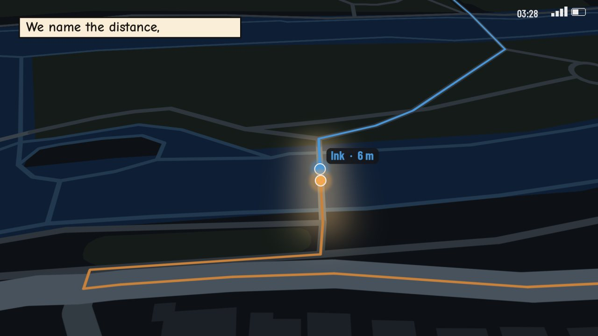
272:57From a session 3 reel
We name the distance, not the loss
The map, after the drawn reveal: his blue trail from home drawn in, the two dots 'Ink · 6 m'. He was on his way all along.
One of the two moments you asked to keep
Colour: the map
Every line
2:40The signal falters, courage tooHer phone 'The signal falters,' on her phone as the bars go and the call freezes: No connection · Ink last seen 03:09, at home (his signal is broken too: his dot stuck when he left). 'courage too' a caption
2:44A pause, I’m scared of losing youThought balloon At the top of the arch, in the dark: 'A pause,' a caption; 'I'm scared of losing you' her thought
2:46But then your laughter cuts the noiseCaption box The second shadow, an umbrella's, stretches up the deck; his laugh cuts the static as a sound in his blue
2:49And suddenly I hear your voiceCaption box The voice comes from the dark; her phone is dark in her hand
2:53You say, “I’m here, I always was”His hand, blue biro 'You say,' a caption; 'I'm here, I always was' in his own hand, blue biro, held still mid-page. The only time
2:56We name the distance, not the lossHer map 'We name the distance,' as the map shows Ink · 6 m (your budget); 'not the loss' a caption
2:59Word by word, we cross the nightWord-stones The word-stones light the deck between them, word by word
3:02To find each other in that lightCaption box The lamps back to amber: two shadows underneath one light, as in the puddle
3:06 to 3:35 · stop-start drums again, then full
Final Chorus
Together: every thread pays off
Mill Meadows, the Royal Engineers Bridge, the Rope Walk zebra, Cardington Road · 03:29 to 03:41
The camera lost in chorus 1 finds two people under one umbrella. Her phone lights at last with his message from 03:10, the one the signal lost: it arrives after he did. The fox watches them go. Her map: the time apart, 0 min. They cross the second zebra together. The sky pales in the north-east: on the shortest night, colour coming back is the first light.
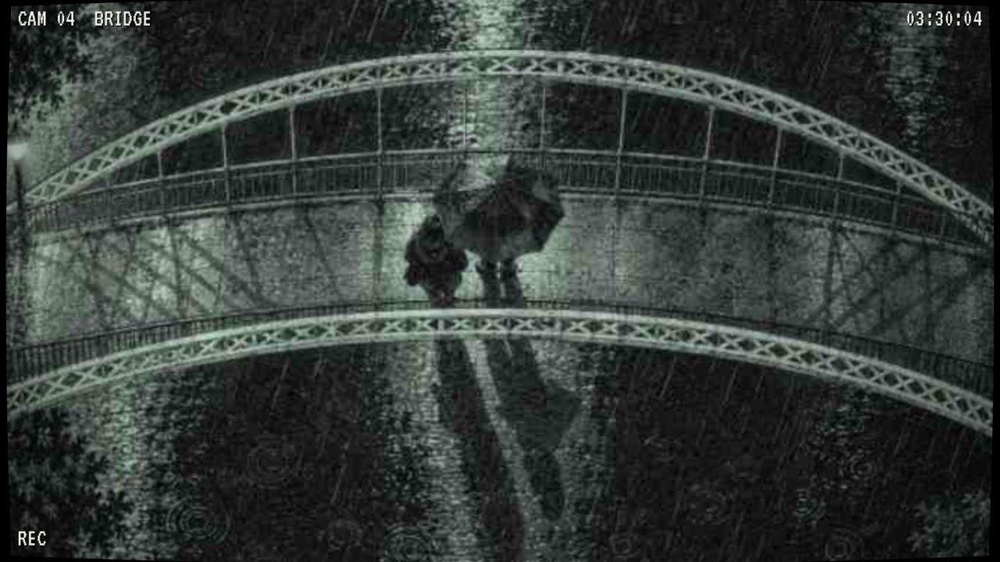
283:07Code over a sketch
We'll build a bridge between our hearts
CAM 04 BRIDGE comes back: the camera lost in chorus 1 finds two people under one umbrella crossing the white arch. Then the monitor wall again, every camera live, the echo on its labels.
The cameras' payoff: what was lost at 0:47 is found
Mocked here from frame 14 through the CCTV tool
Colour: CCTV grey-green
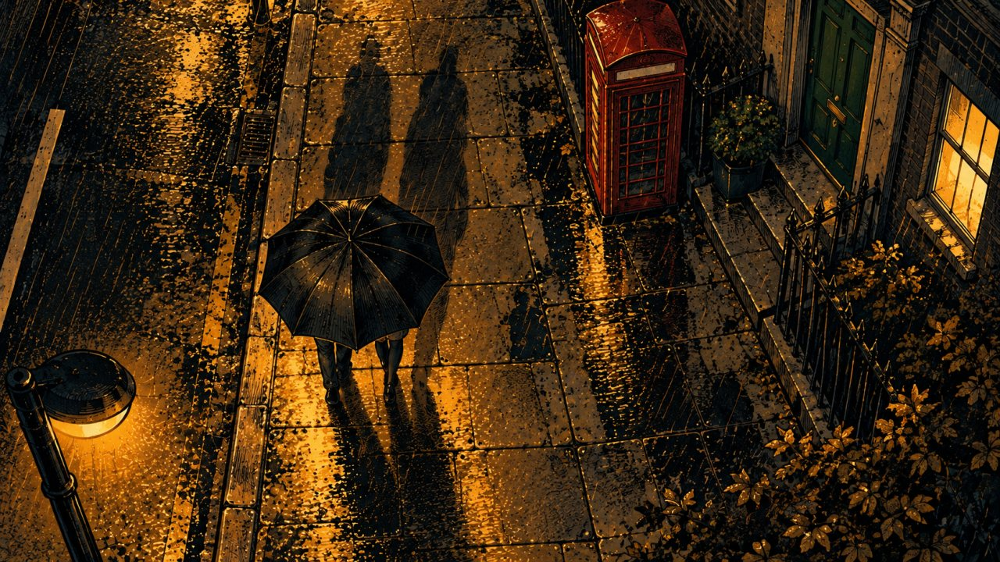
293:12Sketch
We'll build a bridge between our hearts
Home in step under one umbrella across Mill Meadows and over the Royal Engineers Bridge: from above, a black circle and two pairs of feet, two shadows swinging together under every lamp. Her phone lights in her pocket: his message from 03:10, '🌧 😩', arriving now, after he did. Her bare hand finds his on the umbrella's handle. Colour comes back.
The midsummer sky pales in the north-east through the final chorus: colour returning is the first light, really
Bare hands, no bands: earlier in their relationship, shown and not said
Known drift: the sketch's touches of colour (a red phone box, a green door) are invented
Colour: ink + amber, colour returning
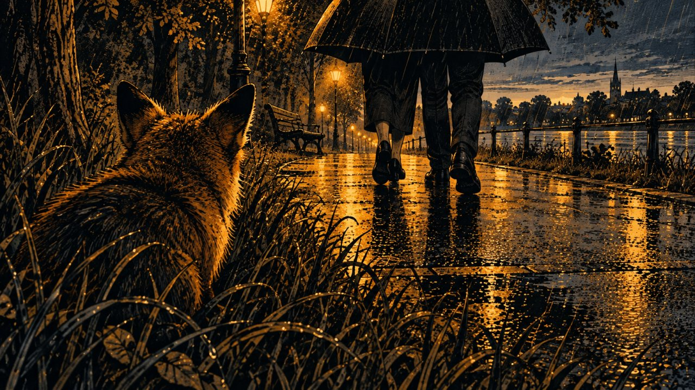
303:17Sketch
We're closer now than we ever are (closer)
The fox again, low in the long grass of the island, watching two pairs of shoes walk away in step under one umbrella. The last low shot.
The witness: alone at the lights, now it sees two
Then the map: 'the time apart: 0 min' (your budget, 3:23)
Colour: ink + amber, the first grey-blue of dawn
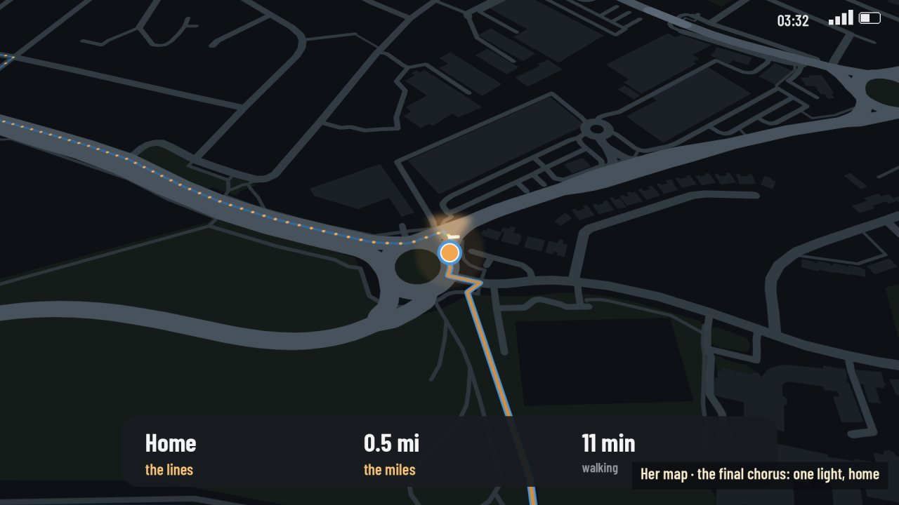
313:23From a session 3 reel
(The lines, the miles, the time apart)
Her map, one dot walking home: the card's 'the time apart' reads 0 min.
The other moment you asked to keep
Colour: the map
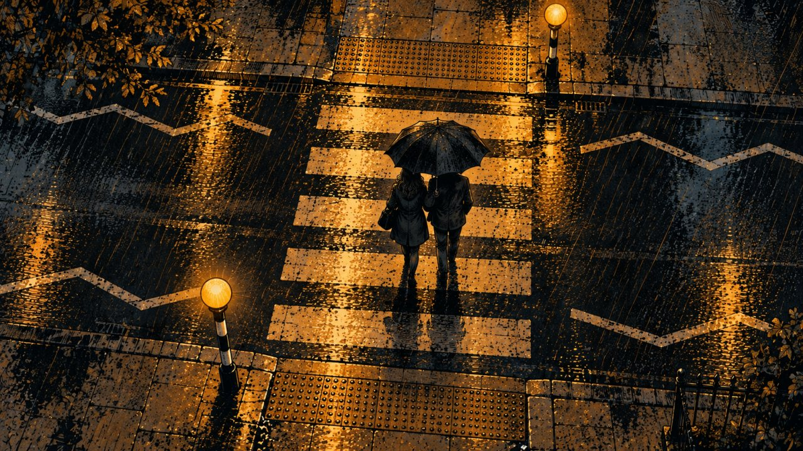
323:26Sketch
Crossing over where the fractures are
The zebra on Rope Walk, the second zebra of the walk: crossed together, in step, the umbrella over both, a word of the line on each stripe as they step over it.
Laid out as a real zebra: stripes along the road, they step across them; tactile paving at the dropped kerbs, lined up; a beacon at each end
Verse 1's zebra was crossed alone
Colour: ink + amber, dawn's grey-blue in the wet road
Every line
3:07We'll build a bridge between our hearts (our hearts)Camera labels CAM 04 BRIDGE comes back: two under one umbrella on the white arch. '(our hearts)' dropped
3:10(The lines, the miles, the time apart)Camera labels The monitor wall again, every camera live, the echo on its labels
3:12With every word that heals a scar (a scar)Her phone His message from 03:10 lands at last, after he did ('🌧 😩', sent 03:10, delivered 03:31: a grumble, and here he is), her bare hand in his on the umbrella's handle. '(a scar)' dropped
3:17We’re closer now than we ever are (closer)Caption box The fox, low in the long grass, watches two pairs of shoes walk away in step. '(closer)' dropped
3:23(The lines, the miles, the time apart)Her map Her map, one dot walking home: the time apart, 0 min (your budget)
3:26Crossing over where the fractures are (they are)Words in the world On the Rope Walk zebra's stripes, a word a stripe as they step over them together. '(they are)' dropped
3:31(that little light that says we’re not that far)Thought balloon The porch light he left on, seen from the end of their close: her thought, as in chorus 1, now with him beside her
3:35 to 3:56 · the deepest bass of the song; the guitar lifts from 227 s
Outro
Their own camera
Their close, their door · 03:41 to 03:45
The deepest bass. Their own doorbell camera: Motion at Front Door, 03:46, two coming up the path under one umbrella. Its event list holds two earlier clips: 03:07, a man stopped on the step with the umbrella furled, plucking up courage; 03:09, the same man going out alone under it. The guitar lifts.
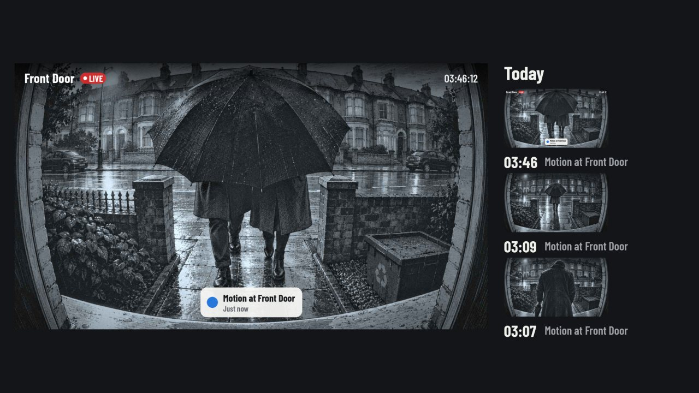
333:45Code over a sketch
Their own doorbell camera: 'Motion at Front Door · 03:46', two coming up the path under one umbrella. Its event list holds two earlier clips: 03:07, a man stopped on the step, the umbrella still furled; 03:09, the same man going out alone under it. The courage it took, kept by the camera.
Your reason, shown and not said: plucking up courage, then going
Why his dot said 'at home': it stuck when he left; the signal is broken both ways
Opened by a stranger's doorbell in the intro
Colour: night-vision grey turning to colour
Both doorbell views are Codex drawings put through our night-vision and interface code
No lyrics: the picture and the music.
3:56 to 4:02 · drums out, keys, synth and guitar to the end
Ending
Full colour
Their doorstep, at sunrise · 04:47
04:47, sunrise on the shortest night. Their street in full colour for the first time; the streetlights click off on their photocells on the final chords; the umbrella left open on the doorstep to dry. The comic closes. AMBER & INK; Map data (c) OpenStreetMap contributors.
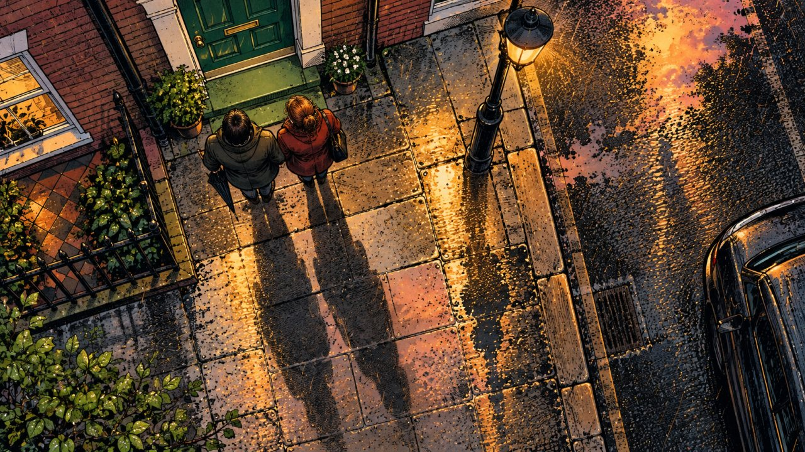
343:56Sketch
(that little light that says we're not that far)
Sunrise at 04:47 on the shortest night: their street in full colour for the first time, the streetlights clicking off on their photocells on the final chords, the umbrella left open on the doorstep of their first home to dry, a rented terrace with a letterbox. The comic closes like the last one did.
Full colour at last
The lamps switching off on the final chords
AMBER & INK on the back cover; Map data (c) OpenStreetMap contributors in the titles
Known drift: the sketch shows two people at the door and her coat red; the plan is the open umbrella on the step
Colour: full colour, dawn
No lyrics: the picture and the music.
The lettering's looksone look, one meaning: how to read the line tables
Caption box
Her narration: the story as she tells it
Thought balloon
What she wonders or fears and doesn't say
Her phone
What she writes, and what the phone tells her: messages, the call, the signal
Words in the world
The town holding her words: a street sign, a poster, an advert, an LED board, road paint, a plaque, a zebra
Camera labels
The city's cameras watching, and the echo 'the lines, the miles, the time apart'
Her map
The miles: her dot, his, the river between
Word-stones
What they say to each other, becoming the path
His hand, blue biro
Ink's own words. Once
Echoes are given a form (a camera's labels, the departure board, the map's card, her thought) or dropped. Never lettered tiny.
The threadswhat runs through the sections, and where it pays off
theirs: 03:46 home; 03:09 he goes; 03:07 he stops on the step
The fox
under a car
crosses on the green man
watches them go
Her phone
the message, not read
Read 03:06, arriving late
the call
the map, 9%
the signal goes
his 03:10 message, at last
Glass
the puddle's memory
the café, her reflection, the mirror
Low and deep
the fox's eye level
parallax, the dolly zoom
the fox's eye level
Word-stones
the High Street's slabs
the bridge's deck
The lamps
the shadow clock
they fail
they restrike
they click off
Saved for the endeach used once, or held back until it means most
His handwriting
Once: 'I'm here, I always was'.
The umbrella
First seen as a shadow on the bridge; never before.
Two shadows underneath one light
A memory in a puddle in verse 1; real only on the bridge.
CAM 04 BRIDGE
Lost on a downbeat at 0:47; found at 3:07.
03:07 and 03:09
On their doorbell, in the outro, after we've seen him arrive: the courage, then the going.
His message
Sent at 03:10, lost to the signal; it arrives at 03:31, after he did.
The map's last two moments
Ink · 6 m, and the time apart: 0 min.
The second zebra
She crosses the first alone; they cross the second together.
Full colour
Only at sunrise. Until then every colour means something: the memory, his blue, her work's green, the first light.
Faces
None: 'Not never faces, but still no faces.'
Liberties, taken on purposewhere the film departs from the real place, and how each is kept from looking like a drawing's mistake
A lamp at the bridge's far end
The real bridge has no lamps on its deck. One old lamp post stands at the Mill Meadows end, the same post in the same place in every drawing of the bridge, so his shadow has a source and it reads as the place, not as a drawing's accident.
The lamps failing, then restriking
A stretch of the Embankment's lighting goes, lamp by lamp in walking order, as one circuit failing would; they come back pink and warm to amber, as low-pressure sodium does. Never a lamp lit in one panel and dark in the next without the story doing it.
Sodium everywhere
Bedford's lamps are probably LED now. The film's town is lit by the old sodium lamps, all of it, all night: a choice of light, kept without exception.
Shops, cameras, the chemist, a bus shelter
Invented, placed on real streets where such things stand: CCTV on poles at junctions, a chemist's cross over a parade of shops, a shelter at a kerb. Each one drawn once and kept.
THE IN-BETWEEN
The footpath is real; its sign is ours, in the real signs' black-on-white style, on the corner house where a real sign would be.
48 minutes in four
The walk is compressed; the clocks on screen never are. Every clock reads the story's time.
The deviceswhat code does, so the drawings only have to be right about what
The shadow clock
Lamps spaced on the bar grid, so her shadow sweeps round her once every two bars: long behind, short underfoot, long ahead. Between lamps she has two shadows. Computed from where she is and where the lamps are, so it's exact and on the beat.
Driven by: Beat grid, her walk
Amber and Ink
Two inks for the night: sodium amber for light, blue-black ink for everything else. Every other colour means something: his blue (the phone, his handwriting), memory (dusk colour, in puddles), her work (green), dawn (all of it).
Driven by: Sections, chords
Lyrics in the world
Each line takes the form of what it means (the lettering's looks, below): a street sign, a LOST poster, a chemist's cross, an advert, an LED board, the cracks in a road, a bench's plaque, a zebra's stripes. Lettered by us, fitted to the drawn surface, every surface checked at 2x before a render.
Driven by: Word timings, the plan's table
Ways of seeing
A different view each section, from the session 3 tools: parallax inside held drawings (depth from the drawing itself), the town's cameras (a picture as a cheap recorder keeps it), her map (Bedford's real streets, unnamed), doorbells in night vision, low shots at a fox's eye level.
Driven by: Sections, the plan
Lamps that fail and come back
Each lamp lifted off its drawing and lit by us, so it can fail at the breakdown, flicker pink, and restrike from pink to amber as he arrives, the way sodium lamps really do.
Driven by: The breakdown, the bridge
Shaped panels
Memories open in puddle-shaped panels and close in a ripple; the ward is a lit window; the night bus's windows are a strip of panels; the bridge's reveal folds every panel away into one splash page.
Driven by: Sections, the two-step
The phone
Ours to letter as a real phone: a messaging screen (bubbles, the time, typing dots on the hi-hats, ticks, Read 03:06), the call and its timer, the signal going, the map with its battery at 9%.
Driven by: Hi-hats, word timings
Rain and the two-step
Drizzle lit where light catches it, rings in the puddles on the kick, the lights and the green man on the groove, panels sliding in on the syncopation.
Driven by: Drum MIDI, stems
Word-stones
From the first test, grounded: in verse 2 each true thing she says lights the paving slab she steps on, the word carved into it. The conversation becomes the path home.
Driven by: Word timings
Decidedyour answers, in your words
When it happens
"Yes, this is definitely earlier in their relationship." Before the child, in their first home, no wedding bands yet: the night she learns he'll come out for her, years before she comes home for him.
Her work
"The care-home late shift. She's surrounded by people in hospital beds, visitors all day, and she feels alone."
Ink comes out to meet her
"Ink's arrival is lovely. It's almost a reflected version of the original story. She's the vulnerable one, and he's there for her. They're supporting each other."
The same Amber
"Yes, I think it is. The difference in vocal is awkward, but it's ok. We can live with that." Later: "The difference in vocals is past timbre and tone, and way into completely different accents ... The vocals in Ceiling are a classic country and western twang, whereas here she's more British. We'll figure it out." Not re-recording: Suno drifts like Codex does.
The angle
"The angle from the storyboard is correct. It's what I had in mind." The high three-quarter view, looking down on her.
The hour
"It's 3am-ish, yeah. Definitely super early; her shift finished very late, and it's a long way home."
The town and the bridge
Bedford, unnamed, credited in the titles. "Suspension bridge is good, keep that." "This route is good." "Home is fine."
The map's budget
A glimpse in verse 1, half of chorus 2, 'No connection', 'Ink · 6 m' after the drawn reveal, '0 min' in the final chorus: "Definitely keep those last two moments in particular."
Ways of seeing
"Love that structure." "The fox would be great, and someone's doorbell is an excellent idea." "Reflections in windows, and also seen from inside looking out of a closed shop."
Parallax and the cameras
"Definitely have a place here." "Keeping a simple journey home interesting is all about the presentation and interesting angles, observations and clever use of the set."
Comic, not animation
"Focus on using panels, swipes, fades, etc, to give the drawn-but-animated feel." Held drawings with her drawn in; the motion is the page's and the light's.
The style
"I like the style very much. The use of colour is great." Amber and ink, colour as meaning.
Midsummer
"Midsummer; good call." The shortest night: dawn at their door at 03:46, sunrise at 04:47, the trees in leaf, a light coat.
The bridge, restaged
"Sounds good to me ... I don't mind artistic license, if we're careful about it not looking like a generative mistake." So every liberty is listed (below) and kept the same in every drawing.
Why he left at 03:09
"He was plucking up courage; getting ready. Their signal is broken tonight, both ways; he's likely messaged and it didn't get through."
The echoes
Not every word on screen: "we should be creative and interesting with the choices, but not force everything in if it's not working."
The cameras
"Monochrome cameras are good; they retain a comic-book feel in their style this way."
The title
Sodium, the song and the film. "Sodium sounds good to me." "I think the song is called Sodium. I never liked Bridge Between Us much."
Ink's courage, kept
The 03:07 clip on their doorbell: "yes, good call on the extra clip."
Still openfor you to judge or answer
His message's wordsYours: '🌧 😩', a grumble about the rain from someone who then turns up anyway. Variations to judge when we letter it: '🌧 😩 ☂️' (my pick: the umbrella is the only hint he was coming, readable only once he's standing there holding one); '👍' (acknowledges, nothing more); 'is it still raining' (a question he answers by going).
How much shows it's earlierCarried on: quiet details that are true anyway (bare hands, their first door, no baby things).